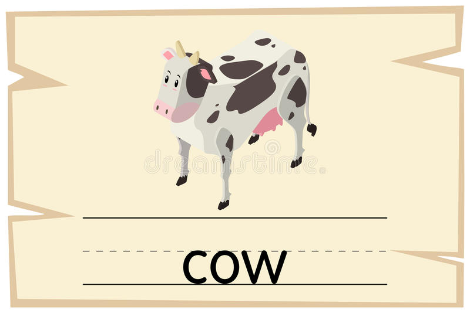
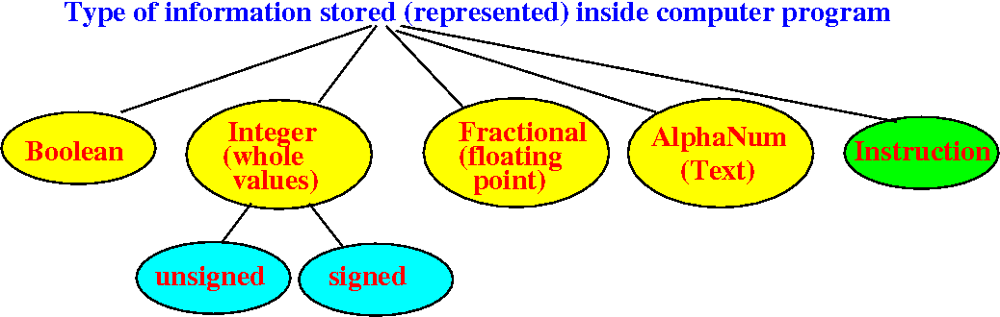
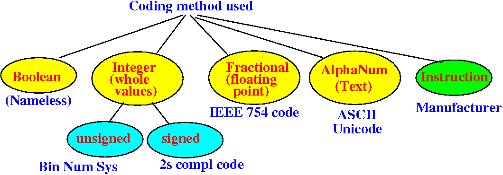

- Humans
is probably the only being
that can represent information
The way that human represent information is through the use of:
- codes
- Encoding is
a process that converts
some information into a
number of symbols
Decoding is the reverse process where the code symbols are converted by into a form that the hamun recipient can understand
See Wikipedia for some more details: click here
- The English language is
written using
26 symbols that we
called
letters:
A B C D E F G H I J K L M N O P Q R S T U V W X Y Z
- English-speaking people use
these letter to
encode (= represent
information
Examples: ecoding information on something found in reality in letters

- The Morse code was
invent to
represent
the English letters and numbers by
short/long pulses
- Before modulation techniques were
invented, we could
only transmit
pulses through
radio waves
- English messages
at that time were transmitted by
radio
using
the Morse code
- Here is a Morse code table:
(I only know how to send SOS using the Morse code: ... --- ...)
- The Morse code is an example of code that is used to represent text data.
- In CS170/CS171, you have encountered
all the possible data that
computer programs need to
manipulated:
- Integer numerical data
- Java use the long, int, short and byte data types to store values of integer numerical data
- Floating point numerical data
- Java use the float and double data types to store values of floating point numerical data
- Textual data
(i.e.: words)
- Java
use the
char
data type
to store
values of
textual data
(A variable of the char data type can store one single character.
A single character is not useful, so Java made a String type that is an object type consisting of an array of char.
But the fundamental data type in Java to store textual data is char.)
- Java
use the
char
data type
to store
values of
textual data
- Boolean data
- Java use the boolean data type to store values of boolean data
- Integer numerical data
- Remember that:
- Computer stores
information in its
(computer) RAM memory
Computer memory are constructed using electrical switches:

Each switch can remember one of the values of 0 or 1 (= a binary number of "bit").
- As discussed previously, the computer RAM memory consists of a series of bytes; and each byte can store an 8 bit binary number
- Computer stores
information in its
(computer) RAM memory
- $64,000 question:
- How does the computer represent the different kinds (integer numbers, floating point numbers, text/characters, boolean) of information ???
Answer:
- The computer uses a suitable code to represent the values of different type of information !!!
- Overview of
the different type of
information in
computer program:
 You can see that many of these are data types in a programming language
- The encoding method for these
different information types are
as follows:
 We will study all these encoding methods
We will also discuss how to convert between some of the data types.